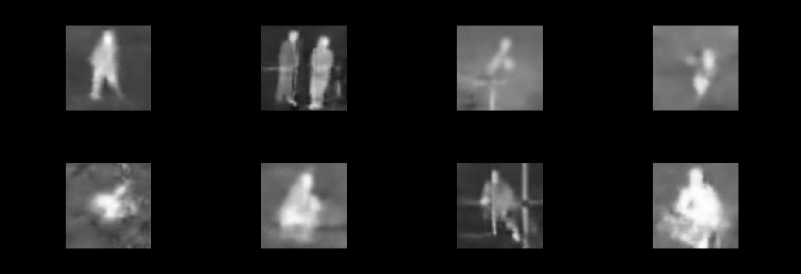

There will be no more determination
Residency: Con.divisione Residenza 2022 - Maul
The use of military technology has been a double-edged sword. While it has undoubtedly provided us with numerous advancements, it has also contributed to the dehumanization of those affected by it. This is the core message of the "There Will Be No More Determination" project, which serves as a poignant reflection on the impact of military technology on our society.
The project utilizes generative adversarial networks (GANs) to generate abstract images based on military helicopter footage taken in conflict zones like Afghanistan, Iraq, and Pakistan. The use of GANs is a powerful tool, enabling the artist to create images that are simultaneously familiar yet otherworldly. The result is a collection of images that not only captivate the viewer's attention but also force them to confront the inhumane nature of modern warfare.
The project's tite, "There Will Be No More Determination," is a nod to the documentary that inspired it, "There Will Be No More Night.", directed by Éléonore Weber with Nathalie Richard. This title speaks to the loss of human agency that occurs when military technology is deployed, reducing people to mere targets in a battle that is out of their control. It is this idea of losing control that lies at the heart of the project, challenging viewers to consider the ways in which military technology robs people of their autonomy and free will.
Through the creation of these abstract images, "There Will Be No More Determination" encourages reflection on the ethical implications of military technology. It invites us to consider the cost of our technological advancements, the price we pay for our modern conveniences, and the consequences that we may not have considered. These images are not only captivating but also thought-provoking, highlighting the complexity of the issues we face as a society.
